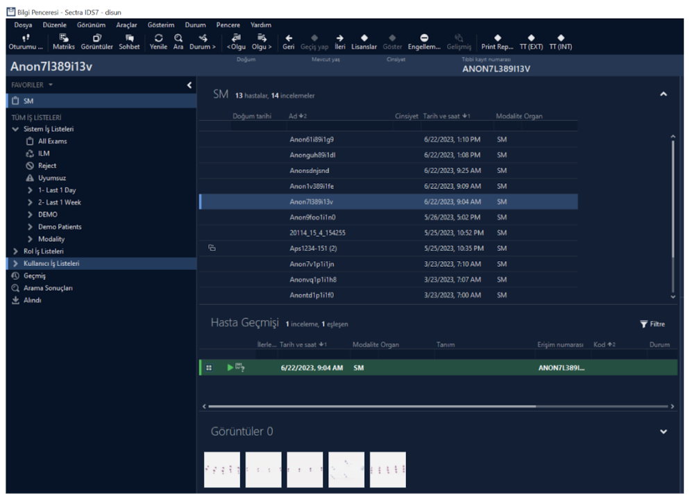
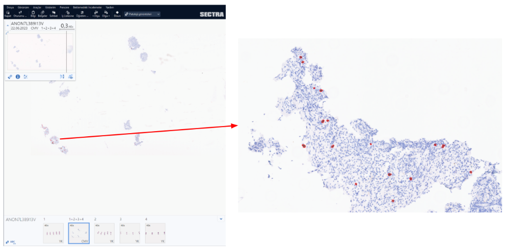

Back to Projects

CMV Detection Module
AI-Powered Cytomegalovirus Detection in IHC Images
Computer Vision
Deep Learning
Medical Imaging
IHC Analysis
CMV Detection
Developed an AI-powered decision support algorithm for the detection of Cytomegalovirus (CMV) in immunohistochemical stained images. This module is now ready to be used with the Sectra PACS system, offering a comprehensive solution for the detection of cells with CMV inclusions.
From the home page, cases can be browsed and selected, opening a viewer for all associated glass images. A single click sends the CMV-labelled slide to the detection module, which highlights each CMV nucleus in red.
Interface Demonstration

Figure 1: All cases uploaded to the Sectra PACS interface.

Figure 2: Glass images of the selected case and CMV detection.
Figure 3: Example of pathologists’ notes in the result window.
Performance Metrics of CMV Detection Model:
| Accuracy | F1 Measure | Precision | Recall |
|---|---|---|---|
| 0.9593 | 0.8952 | 0.8261 | 0.9771 |